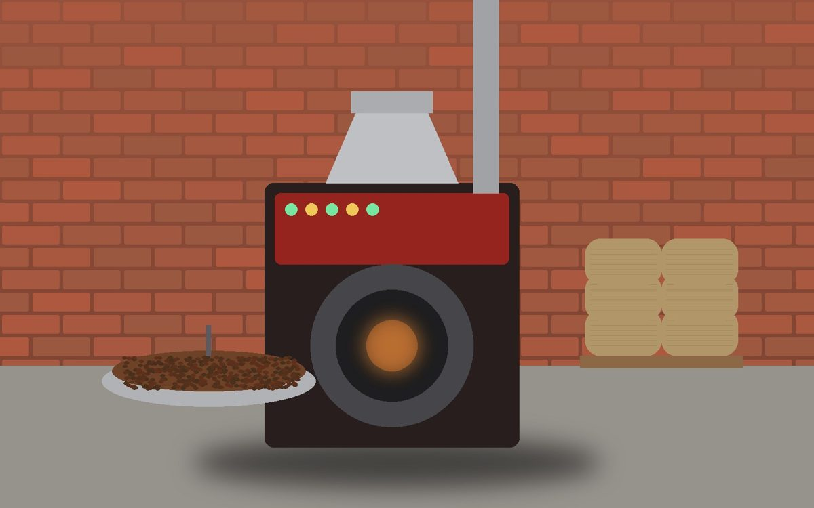
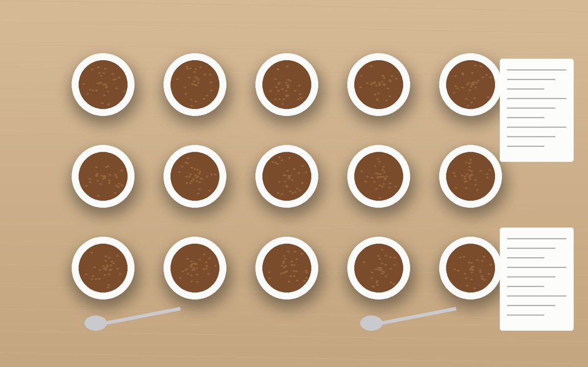
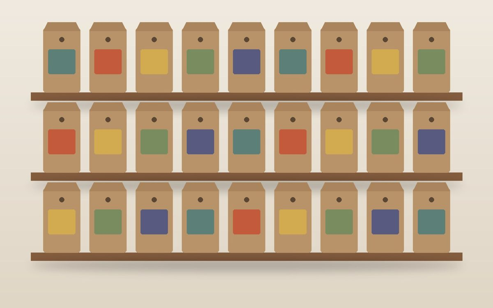

We roast specialty coffee on a 15 kilogram drum roaster in Fremantle's West End, and we pour it in our own cafe at the front of the roastery. Every roast is cupped before it leaves the building. If a batch does not taste the way it should, it does not ship.
Our coffee goes three ways: across our own counter, to the cafes, restaurants, offices and hotels across Perth's south and west that serve it, and by post to subscribers around Australia.
Four blends and the season's single origins
The Tannery house blend is chocolate and toffee, made for milk. West End is our brighter espresso. Harbour is our filter blend. We also roast a sugarcane-processed decaf. Single origins rotate with the harvests: Colombia (Huila), Ethiopia (Sidama), Brazil (Cerrado) and Guatemala (Huehuetenango) are on every year.



The cafe
Forty-six seats inside and eighteen outside, open from 6:30am on weekdays and 7am at weekends. Breakfast and lunch from our small kitchen, with bread from a local bakery. Through the glass you can watch the roaster at work on Mondays, Wednesdays and Fridays.
Wholesale
We roast for cafes, restaurants, offices and hotels, and deliver next day in our own van across Perth's south and west. Every wholesale partner gets barista training for their team at no charge, and every roast is checked before it is packed. You will find our coffee at the Seabreeze hotels, Cottesloe Commons Cafe and Little Marlow Kitchen, among others.
Subscriptions
Fresh coffee every two or four weeks from $28, ground or whole bean, posted within two days of roasting. Pause or cancel whenever you like.